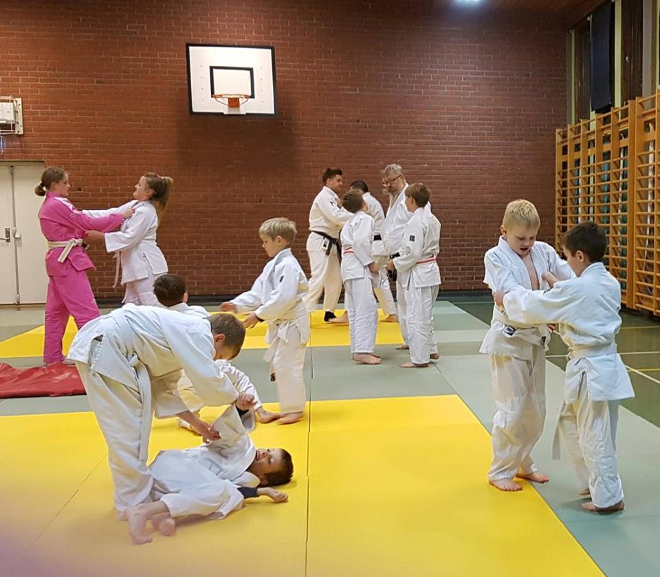
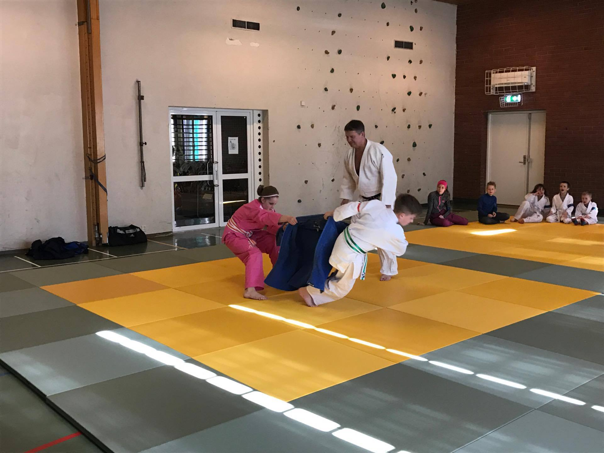
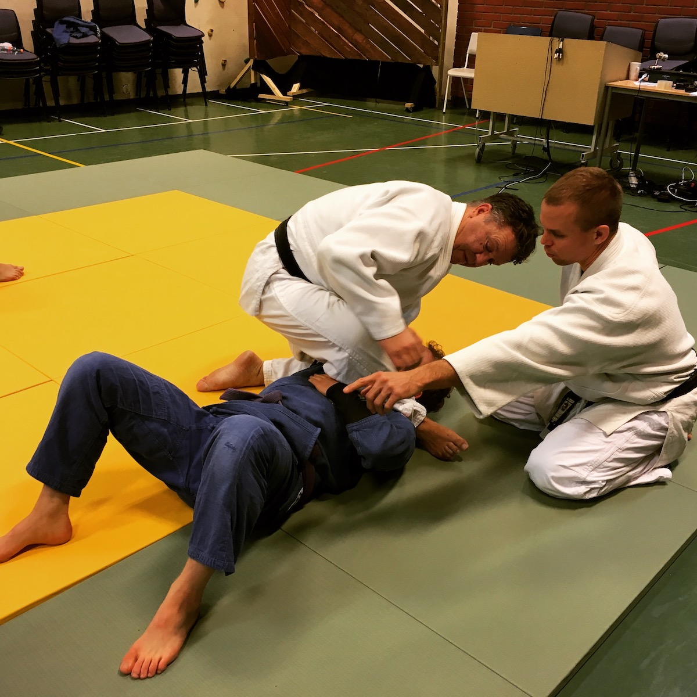

				<!-- Banner -->
					<section id="banner">
						<div class="inner">
							<h2>{{ site.title }}</h2>
							<p>{{ site.description | markdownify }}</p>
						<a href="#info" class="more scrolly">Mer om klubben</a>
					</section>

				<!-- Info -->
					<section id="info" class="wrapper style1 special">
						<div class="inner">
							<header class="major">
								<h2>Trening <br />
								med erfarne trenere</h2>
								<p style="text-align:left">Innherred Judo og BJJ har erfarne kampsporttrenere. Siden 1972 har klubbens trenere utviklet utøvere som igjen har blitt svært gode representanter for idretten.
								</p>
								<p style="text-align:left">
									Judo og brasiliansk jiu-jitsu (BJJ) er idretter som bygger kondisjon, styrke og balanse hos sine utøvere. Det er også individuelle idretter som over tid fostrer selvdisiplin og selvsikkerhet.
								</p>
								<p style="text-align:left">
									Vi har partier for barn/ungdom og voksne, og er klare for å ta i mot nybegynnere når som helst. Vi er lidenskapelig opptatt av judo og BJJ, og elsker å trene og lære bort.
								</p>
								<p style="text-align:left">
									Ta <a class="scrolly" href="#kontakt">kontakt</a> for en uforpliktende prøveperiode i dag!
								</p>
							</header>
						</div>
					</section>

				<!-- Sponsor -->
				<section id="sponsor" class="wrapper style2 special">
					<div class="inner">
						<header class="major">
							<h2>Toyota</h2>
							<p style="text-align:left">Vi er en meget stolt samarbeidspartner med Toyota Levanger. Jigoro Kano startet en verdensomspennende kampsport i Kobe i 1882, og i Japan i 1937 startet Toyota det som i dag verdens største bilprodusent.
							</p>
							<p style="text-align:left">
								Ikke bare lager Toyota biler av ypperste kvalitet, de har også endret store deler av verden med sine metodikker for produksjon. I dag er ord som <a href="https://no.wikipedia.org/wiki/Lean">Lean</a> og <a href="https://no.wikipedia.org/wiki/Kanban">Kanban</a> dagligtale for mange som arbeider med å produsere noe for noen.
							</p>
							<p style="text-align:left">
								<a href="https://en.wikipedia.org/wiki/The_Toyota_Way">"Toyota way 2001"</a> er en oppsummert filosofi som består av to hovedområder <strong>respekt</strong> og <strong>kontinuerlig forbedring</strong>, et speilbilde av Kodokan Judo sine viktigste idéer om maksimum effektivitet og gjensidig velferd og respekt. Mens Toyota kontinuerlig forbedrer biler, skal vi sørge for å kontinuerlig forbedre oss selv.
							</p>
							<p style="text-align:left">
								Stikk innom og snakk med de dyktige forhandlerne hos <a href="http://toyota.bilia.no/kontakt/toyota-levanger/">Toyota Bilia Levanger</a> for en prøvetur med f.eks. den unike <a href="https://www.toyota.no/current-offers/rav4-promo.json">RAV4 Hybrid</a>
							</p>
						</header>
					</div>
				</section>

				<!-- Treninger -->
					<section id="treninger" class="wrapper alt style2">
						<section class="spotlight">
							<div class="image"></div><div class="content">
								<h2>Barn</h2>
								<p>Barn fra 1. til 7. klasse trener judo sammen. Treningene har som mål å bestå av lek og mestring. Samtidig vektlegger vi disiplin for å innarbeide en god viljestyrke barna kan ta med seg videre i judo og livet.</p>
								<p>Treningene vil øke smidighet, balanse og styrke. Og de vil selvsagt lære seg selvforsvar.</p>
								<p>Barnepartiet trener tirsdag og torsdag fra 1745-1830.</p>
								<p><a href="/barn_og_ungdom.html">Les mer om barn og ungdom</a></p>
							</div>
						</section>
						<section class="spotlight">
							<div class="image"></div><div class="content">
								<h2>Ungdom</h2>
								<p>Ungdom fra 8. klasse trener judo. Treningen blir lagt opp til den enkeltes ferdighetsnivå og inneholder kast, holdegrep, armbend og halslås. Treningene er lagt opp slik at alle, uansett nivå, skal kunne delta.</p>
								<p>Partiet trener tirsdager og torsdager fra 1830-1930.</p>
								<p><a href="/barn_og_ungdom.html">Les mer om barn og ungdom</a></p>
							</div>
						</section>
						<section class="spotlight">
							<div class="image"></div><div class="content">
								<h2>Voksne og junior</h2>
								<p>Voksne og junior trener BJJ og judo. Her trener mosjonister og konkurranseutøvere sammen, treningene legges på et nivå som gjør at alle kan delta.</p>
								<p>Vi har et fast nybegynnerkurs som tar 3 måneder. Etter dette vil teknikken du lærer legges opp til å naturlig følge det du har lært. Du vil også være godt nok rustet til full sparring og få skikkelig god fysisk trening. Fokuset er å trene med gi(drakt), men vi trener også uten drakt.</p>
								<p>Partiet trener tirsdager og torsdager 1930-2100 og lørdager 10-12. Trener er Ole Christian Langfjæran.</p>
							</div>
						</section>
					</section>

				<!-- Kontakt -->
					<section id="kontakt" class="wrapper style3 special">
						<div class="inner">
							<header class="major">
								<h2>Kontakt oss</h2>
							</header>
							<ul class="features">
								<li class="icon fa-paper-plane-o">
									<h3>Sosiale medier</h3>
									<p><a href="https://www.instagram.com/innherredjudoogbjj">Instagram</a><br />
									<a href="https://www.facebook.com/innherredjudobjj">Facebook</a><br />
									<a href="https://www.youtube.com/channel/UCYglIAHSwPWnh_Ipse9NyBg">Youtube</a><br />
									og Snapchat på ijudobjj
								</p>
								</li>
								<li class="icon fa-flag-o">
									<h3>Adresse</h3>
									<p>Vårtun Kristne Oppvekstsenter<br />
										Alstadhaugvegen 150</br>
										7607 Levanger</p>
								</li>
								<li class="icon fa-headphones">
									<h3>Direkte kontakt</h3>
									<p>Snorre: <a href="tel:+4795077326">950 77 326</a><br />
									E-post: <a href="mailto:ijudobjj@gmail.com">ijudobjj@gmail.com</a></p>
								</li>
								<li class="icon fa-heart-o">
									<h3>Personlig</h3>
									<p>Ønsker du å ta kontakt med noen av trenerne eller styremedlemmer?</p>
									<p>Let deg frem på <a href="/menneskene.html">Menneskene i IJB</a></p>
								</li>
								<li class="icon fa-thumbs-up">
									<h3>Priser år/halvår</h3>
									<p>Under 13 år: 1200/600 kr<br />
									Over 13 år: 2200/1100 kr</p>
								</li>
								<li class="icon fa-credit-card">
									<h3>Penger inn</h3>
									<p>Vipps: 86473<br />
									Bankkonto: 42122053932</p>
								</li>
							</ul>
						</div>
					</section>

				<!-- Selvforsvarskurs -->
					<section id="cta" class="wrapper style4">
						<div class="inner">
							<header>
								<h2>Selvforsvarskurs</h2>
								<p>Vi har også skreddersydde selvforsvarskurs som vi kjører jevnlig og gjerne på forespørsel.</p>
							</header>
							<ul class="actions vertical">
								<li><a href="/selvforsvarskurs.html" class="button fit">Lær Mer</a></li>
							</ul>
						</div>
					</section>
